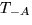
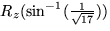
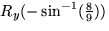

Primer hem de dur el punt A a l'origen amb una translació , el que portarà al punt A a l'origen de coordenades i al punt B a la posició (4, -1, -8). A continuació girarem al voltant de l'eix z amb una rotació , el que durà al punt B al pla xz, deixant al punt A fix. Finalment girarem al voltant de l'eix y amb una rotació , el que tornarà a deixar fix el punt A, però durà al punt B a la posició demanada a l'enunciat.
Les matrius corresponents són:
i
Podeu comprovar que el resultat d'aplicar la primera al punt B (en coordenades homogènies) és (4,-1,-8,1), el resultat d'aplicar la segona a aquest resultat és (17½,0,-8,1), i el resultat d'aplicar la tercera matriu a aquest darrer és (9,0,0,1) tal com es demanava.
Naturalment podeu també multiplicar les matrius entre sí per a obtenir una única transformació que relitzi la tasca demanada. La matriu resultant és